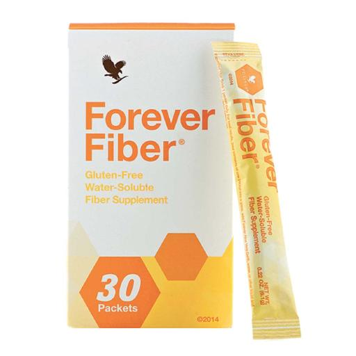
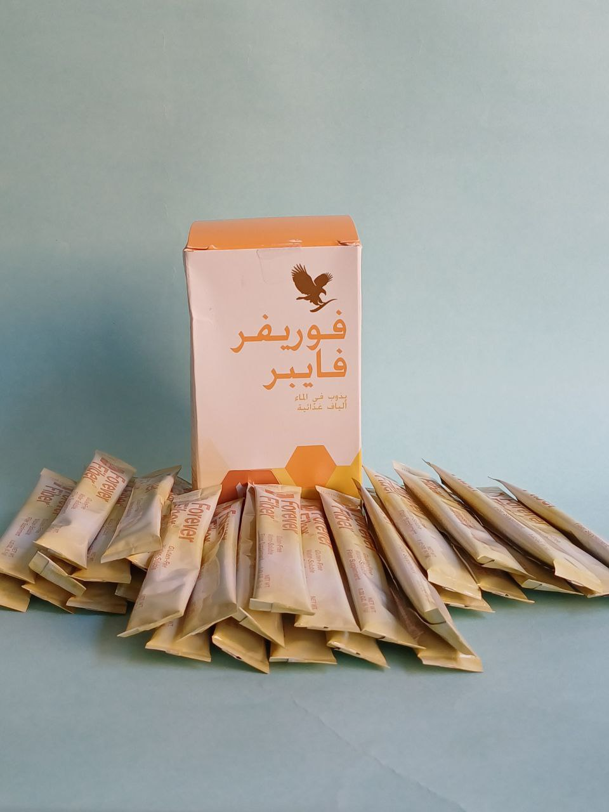

fibere.jpg)
فوريفر فايبر 
احصل على الألياف أثناءالتنقل مع فوريفر فايبر®. تتميز هذه الحزم بأربعة أنواع من الألياف - بما في ذلك سكريات الفركتوليجوكاريد، وهو أيضًا مادة حيوية. احصل على خمسة جرامات إضافية من الألياف مع كل حصة من هذه التركيبة سهلة الذوبان
Price: 125 AED
- شحن سريع
- الدفع عند الاستلام
- منتجات طبيعية وآمنة بجودة مضمونة